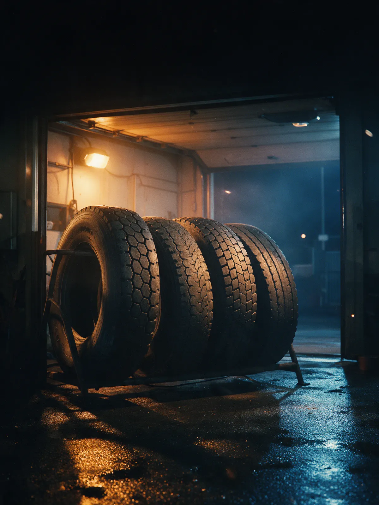
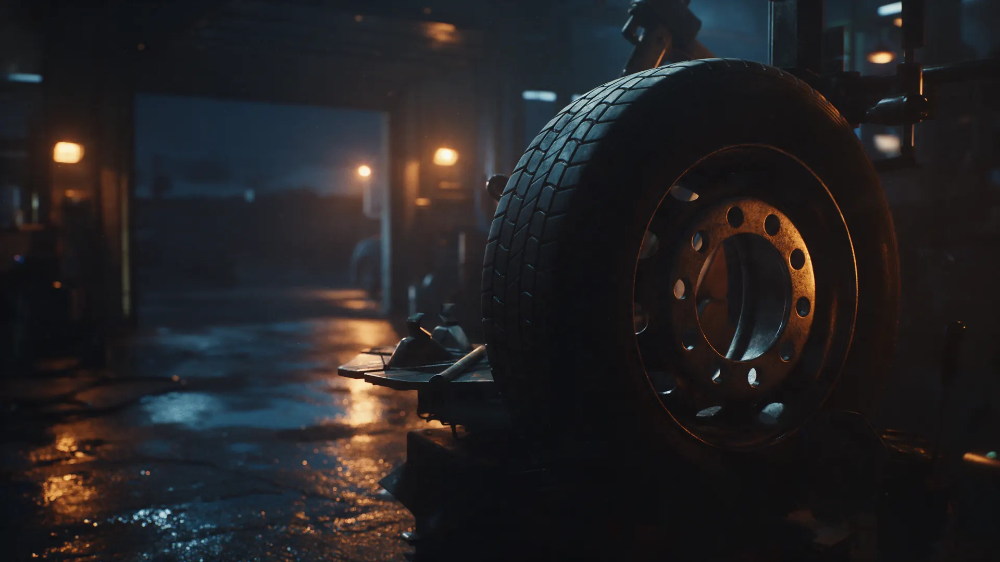
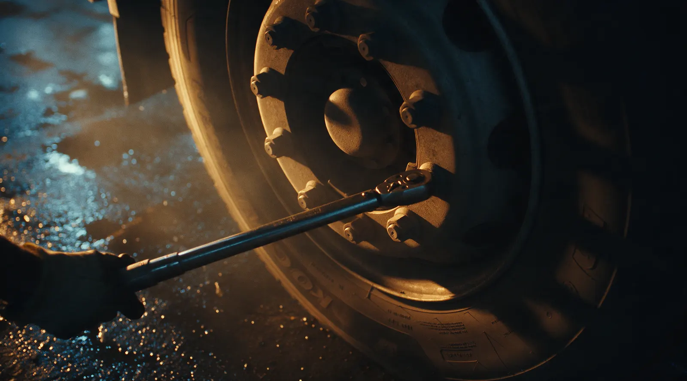

Шиномонтаж и ремонт ходовой · Новошахтинск
Грузовой шиномонтаж в Новошахтинске: подменные шины в наличии
Грузовые, легковые, сельхозтехника. Ремонт ходовой тягачей и самосвалов, б/у шина на газель и легковой. Звоните, подскажем по цене.
- Ремонт ходовой тягачей и самосвалов
- Подменные и б/у шины в наличии
- Цену называем до работ
Цену называем до работ
Цена зависит от машины и работы: назовём по телефону до начала.
Ходовая тягачей, самосвалов, полуприцепов
- Замена рессор, втулок, сайлентблоков, сальников, подшипниковтакже наклёпка накладок, замена подушекот 1 500 ₽
Шиномонтаж
- Грузовые шиныуточнить
- Легковые шиныуточнить
- Сельхозтехникауточнить
- Подменные и б/у шиныв наличии, размер уточняйте по телефонууточнить
Ремонт ходовой – от 1 500 ₽ за работу, точную сумму уточняйте по телефону.
Как проходит
- 01
Позвонили и назвали машину
Грузовая, легковая или сельхозтехника, какая работа нужна.
- 02
Назвали цену до работ
Сумму знаете до того, как машину тронули.
- 03
Приехали на Харьковскую, 197Г
Ходовая, колёса, подменные шины – всё в одном месте.
- 04
Сделали и отдали машину
Платите ту сумму, что назвали по телефону.



Что обещаем
Цену называем до работ
Звоните с вопросом – ответим без «приезжайте, посмотрим».
Подменные шины в наличии
Это отмечают клиенты в отзывах на Картах.
Б/у резина на грузовые, газель и легковой
Подберём по размеру, наличие уточняйте по телефону.
Мелкий ремонт на месте
Колодки, амортизаторы, подушки, масло в агрегатах.
Отзывы с Яндекс.Карт
«Быстро , оперативно . Есть в наличии подменные шины . Ценник в адкевате»
Serge M. · 4 июня 2025
«Заезжал на сервис,меняли подушку.Быстро сделали,ценник адекватный есть б.у резина купил ещё и колесо.вобщем понравился сервис и шиномонтаж,заеду ещё»
Екатерина Гончарова · 26 ноября 2025
«Хорошая шинка, заезжаю не первый раз и не последний, мастера знают свое дело, делают хорошо.»
Александр Белов · 27 ноября 2025
Отзывы с карточки на Яндекс.Картах, без правок.
Частые вопросы
Какую технику обслуживаете?
Грузовые, легковые и сельхозтехнику. Ремонтируем ходовую тягачей, самосвалов и полуприцепов.
Как записаться?
Позвоните: +7 (999) 696-82-86. Онлайн-записи нет, время согласуем по телефону.
Есть ли подменные и б/у шины?
По отзывам клиентов есть, в том числе б/у на грузовые, газель и легковой. Размер уточняйте по телефону.
Где вы находитесь?
Харьковская ул., 197Г, Новошахтинск, Ростовская область.
Позвоните – назовём цену
- Адрес
- Харьковская ул., 197Г, Новошахтинск
- Часы
- Пн–Пт 09:00–20:00, Сб–Вс выходной
- Телефон
- +7 (999) 696-82-86